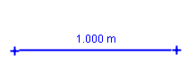

The calibration stick is the most commonly used tool for calibrating the video scale--i.e., the ratio of the world distance in meters (or any desired length unit) to the image distance in pixels between two points. The world length of a calibration stick is displayed in a readout at its center and in a length field on the toolbar. Calibrating the video is simply a matter of setting this world length to a known value--see Calibrating a video for details.
A calibration stick can also be used to correct for tilt in the video image.
If desired, a ruler can be displayed along the length of the stick as shown in the right image above. To show the ruler, check the Ruler box on the toolbar. For more about rulers, see Adjusting the ruler.
Click the arrow on the Calibration button on the toolbar and select New|Calibration Stick to create a new calibration stick. If desired, you can create more than one stick. Show or hide the calibration stick (along with other calibration tools, if any) by clicking the main part of the Calibration button.

A new calibration stick has default length 1.0 m (you will change this later). The way the stick is marked depends on the option selected in the Tracks tab of the preferences dialog.
To change the world length, click either the readout on the stick or the length field on the toolbar and enter the desired length. You can change the length unit at the same time by including it when entering a world length--see Calibrating a video for an example.


To change the pixel length, drag either end of the stick (this changes the scale, since the real-world length does not change). To move the entire stick without changing the scale, drag the middle.


Drag and nudge the ends of the stick to two points in the video that are a known real-world distance apart (ideally these are the ends of a carefully placed "calibration object" in the plane of the motion). Then click the readout of the calibration stick and enter the known real-world distance with or without units (meters is the default).
To change or adjust the video calibration drag the ends of the stick and/or click the readout and enter a new length including units if desired. For example, the image below shows a video calibrated in meters using a white PVC pipe with black stripes every 10 cm. To calibrate in cm, click the readout and enter 30 cm. The length unit will be updated wherever displayed.

The calibration stick also displays its angle relative to the +x-axis on the toolbar. By setting this angle, you can correct for camera tilt when shooting a video.


To correct for tilt, drag the ends of the calibration stick so that it is parallel to a video feature that is known to be horizontal in the real world. Then enter an angle of zero into the angle field. This will rotate the +x-axis to the true horizontal. (Note: the same procedure can be used to set the +x-axis to any known angle.)


By default, the calibration stick has a fixed position--that is, its end positions are the same in all frames. Uncheck the Fixed checkbox in its track menu to allow the position to vary independently from frame to frame.
Note that the calibration stick is always unfixed when the scale of the coordinate system is unfixed since its pixel length must change to keep its world length constant when the scale changes.
Locking the calibration stick prevents it from making any changes to the scale. Lock the stick by turning on the Locked property in its track menu.